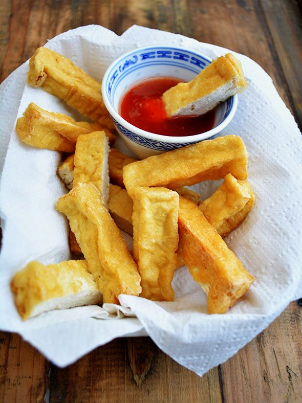

Chilli Tofu
crisp cubes of tofu in a garlicky soy and vinegar sauce with charred peppers

Contains: gluten, sesame, soy
Checked against the ingredient list for ten allergens: milk, egg, fish, crustaceans, tree nuts, peanuts, sesame, mustard, soy and gluten. Brands vary, so read the label on anything new to you.
Ingredients
Quantities for 4.
- 400g firm, pressed and cut into 2.5cm cubes Tofu
- 5 tbsp Cornflour3 to coat the tofu, 2 for the sauce
- 12 cloves, finely chopped Garlic
- 1 tbsp, finely chopped Ginger
- 4, slit Green Chilli
- 3, broken Dried Red Chilli
- 1, cut into squares and layers separated Onion
- 1, cut into squares Capsicum
- 4, whites and greens separated Spring Onion
- 2 tbsp Soy Sauce
- 1 tbsp Vinegar
- 1 tsp, crushed Black Pepper
- 1 tsp Sugar
- 1 tsp Sesame Oilstirred in at the endoptional
- 5 tbsp Neutral Oil
- to taste Salt
- 200ml Water
Cookware
stovetop, kadhai
Before you start
- Press the tofu between two plates under a weight for 20 minutes and pour off the water. Unpressed tofu will never crisp.
- Cut and coat the tofu only just before it goes in the pan; cornflour left sitting on wet tofu turns to paste.
- Unlike the paneer version this one is shallow-fried, so keep the pan hot and turn the cubes only when they release on their own.
Method
- Pat the pressed tofu dry and toss the cubes with 3 tbsp cornflour and 1/2 tsp salt until lightly and evenly dusted.
- Heat 4 tbsp oil in a wide pan and fry the tofu in a single layer for 3 minutes a side, turning to crisp four faces, about 10 minutes in all. Lift out and set aside.Leave each face alone until it releases from the pan by itself. Poking it early tears the crust off.
- Add the remaining 1 tbsp oil to the same pan on a high flame, then the dried red chillies, garlic and ginger. Stir 40 seconds.
- Add the green chilli, spring onion whites, onion and capsicum and toss 2 minutes until blistered but still crunchy.
- Pour in the soy sauce, vinegar, sugar, black pepper and 200ml water and boil 1 minute.Go easy on extra salt. Tofu takes very little and the soy is already salty.
- Slake 2 tbsp cornflour in 4 tbsp cold water and stir it in; cook 45 seconds to a clinging glaze.
- Return the tofu, toss gently for 30 seconds and take the pan off the heat.Toss with the pan, not a spoon, or the cubes break up.
- Stir through the sesame oil, scatter the spring onion greens and serve with hakka noodles or plain rice.
Storage
Keeps 2 days refrigerated. The crust softens overnight; reheat in a hot dry pan for 4 minutes to bring some of it back.
Nutrition Good estimate
Medium protein: 20 g a serving, 18% of the calories
| Per serving241 g | Per 100 g | |
|---|---|---|
| Calories | 428 kcal | 178 kcal |
| Protein | 19.7 g | 8 g |
| Carbohydrate | 31.3 g | 13 g |
| of which sugars | 3.7 g | 2 g |
| Fibre | 4.6 g | 2 g |
| Fat | 27.1 g | 11 g |
| of which saturated | 3.2 g | 1 g |
| of which unsaturated | 22.4 g | 9 g |
Ingredients given to taste count as zero, so the real figures run a little higher. Estimated from raw ingredients using USDA FoodData Central.
Times, yields, allergens and nutrition are guidance. Use your own judgement on doneness and on storing. More in About.